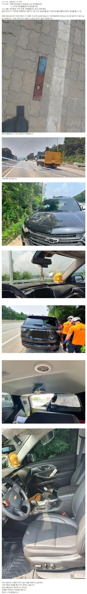

하기 싫으니까
귀찮으니까
경찰이니까
피해자가 자료를 제출해야하니까
그게 경찰이니깐 일하려고 경찰했을꺼같음? ㅋㅋㅋ
사람 안죽었으니까 그렇게까지 수고 안해도 된다고 생각함 진짜로
견찰은 진급 도움안되면 손안대
사건이 얼마나 많고 경찰이 얼마나 바쁜데 사람 죽일뻔 한 새끼 찾는데 시간을 어떻게 쓰시냐...
피해자가 범인 잡아서 대령해야지 일할거임
저 판스프링 쓰지말라니까 파업하는 화물연대 ㅋㅋㅋㅋㅋㅋㅋ 진짜 그냥 싹다 조지면 안되나
걍 쓰지 말라는게 아니라 용접해서 붙이던지해서
안전하게 쓰라는데도 개엽+병떪 ㅋㅋ
진짜 안되는걸 왜 단속도 못하고 저지랄하는지...
시간 위치 알겠다 방범용 CCTV라고 맨날 보이더마 돌려보는게 귀찮은건가?
저러다가 사망사고 난적도 있지않나 근데도 이렇게 뭉갠다고? 민중의 지팡이 맞음?
에이 씨 22년도꺼잖아
있음. 진짜 무서운 사고인데 사람 안다쳐서 천만다행..
예비신랑인가 신혼이였던가 기억안나는데, 고속도로에서 얼굴에 맞아 비명횡사한 사고있었지..
이천IC 부근에서 부부가 영동타고가다가 판스프링이 운전석에 맞아서 신랑 사망한 사건
와 ㅆㅂ 트렁크 유리창 뚫고나간거면 저거 쫌만 각도 틀어졌어도 끔찍하다
천만다행이네 ㅅㅂ
와 씨; 진짜 천운이네
차 세우지말고 끝까지 쫓아가지
내 가족 보살피는게 더 중요함
와 대참사날뻔한거 겨우 살았네 ㄷㄷ
이래서 블박은 4k로 설치해야함
저거 언제 금지시킬거냐 진짜 운나쁘면 뒤지는건데 심지어 예전에 남자분 한분 돌아가셨잖아
후기나 기사는 없나
와 조수석쪽 직빵으로 뚫리고 뒷자석도 오른쪽으로 들어간거같은데 진짜 천운이네
아무도 안다쳐서 다행이다
개드립에도 저거 실드친 병신한놈 있었지
개조해서 적재함에 꽂는건 용접해서 안떨어지고 서스펜션에서 노후화되서 떨어진다는 말도 안되는 개소릴 하고 그게또 추천을 받더라 ㅋ
수십톤 견디게 해서 차체에 체결된 놈이 칼로자른듯이 잘려서 튕기는게 말이야방구야
https://www.yna.co.kr/amp/view/AKR20220816125800062
이딴게 용접되서 안떨어진다는게 말이야 방구야
ㅋ
박힌것도 아니고 관통을 했네 아예..
날짜보니까 같은날에 내가 타기 2시간전쯤이네
진짜 저기 화물차 개 ㅈ같은새끼들 많이다니는데 그 중에서도 유독 ㅈ같은 새끼였네
화물차 개새끼 쳐죽이고싶네
반드시 잡혀서 징역 최대한 오래살길 바란다
"과적을 하게 만드는 화주들이 문제이다"
실제로 한 말
경찰 믿으면 절대안됨. 전에 고속도로 가해차량 영상 찾아야하는데 차일피일 처미루다가 결국 직접 도로공사 문의하니 이미 cctv 기간지나서 다 삭제됐다.. 경찰은 영상확보 시도도 안함.
저거 저화물차를 잡아도 소용 없을 것 같은게, 저 차에서 떨어진게 아니고 이미 떨어진걸 밟았을 뿐일 수도 있어
그걸 확인하려면 잡아야지
빅딸배 개새끼들 진짜
도로 cctv훑으면 나올텐ㄷ, 번호를 왜 확인을 못함?